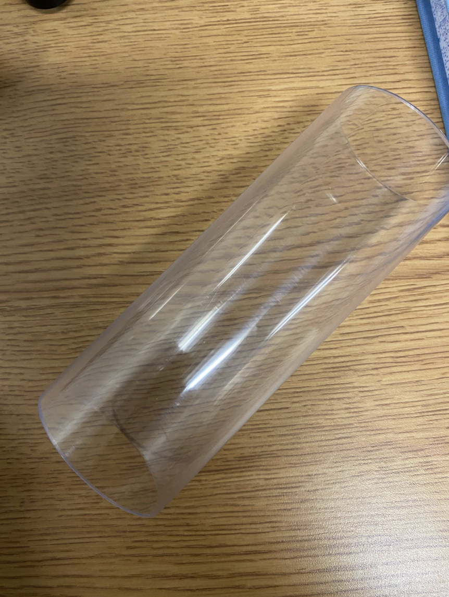
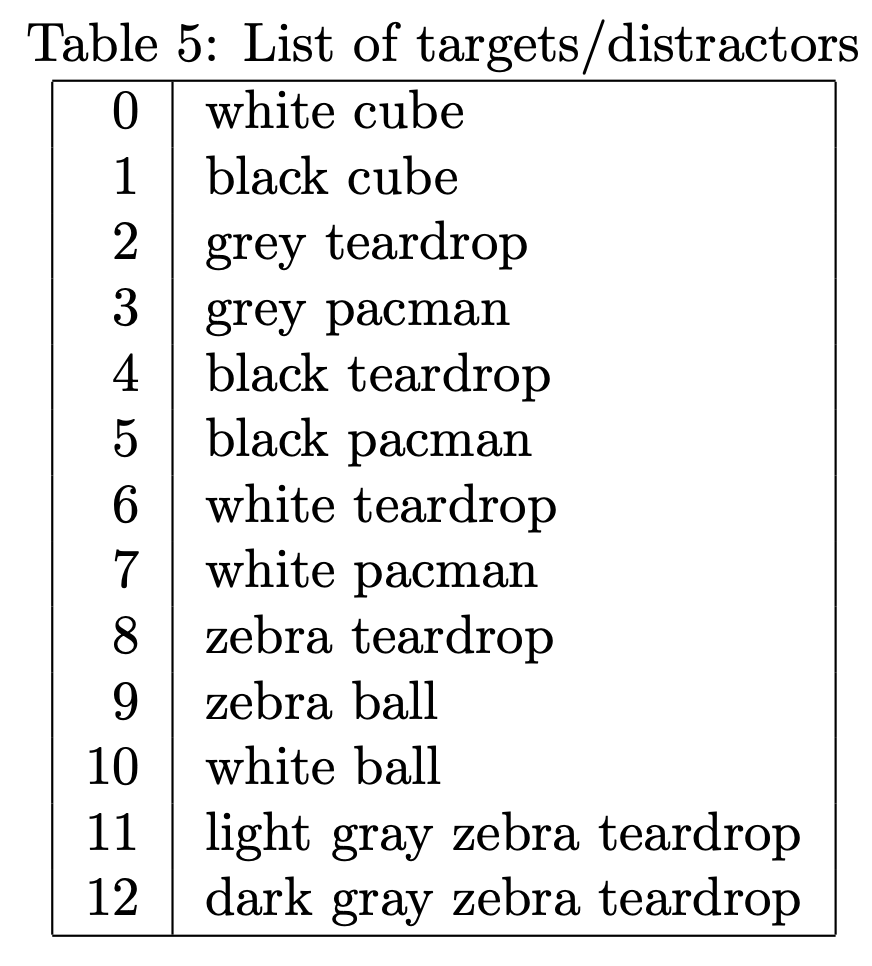

Mouse training#
General mouse training#
This documents give a protocol for training mice in the AR setup. This protocol should be followed by all labs so that we can get consistent data. Note that this will need to be adjusted as we perform the experiments but we should only deviate from it after we discussed a change in the monday meetings. This protocol should then be updated to reflect that by opening a pull request on the GitHub repository.
Handling habituation and baseline weight#
With behavioral training it is very important that stress on the mouse is kept to a minimum. Therefore mice should never be picked up by the tail. This has been shown to reduce the behavioral performance of mice and increase anxiety associated behaviors. Instead, pick up the mice using a plastic tube and if possible allow the mouse to voluntarily enter the tube. Do not force the mouse to go into the tube by boxing it into a corner, just try to be patient and at some point the mouse will enter the tube and you can gently pick the tube up and transfer it into the box. After a couple of days mice will be very happy entering the tube because they know that they will get water.
With behavioral training it is very important that stress on the mouse is kept to a minimum. Therefore mice should never be picked up by the tail. This has been shown to reduce the behavioral performance of mice and increase anxiety associated behaviors. Instead, pick up the mice using a plastic tube and if possible allow the mouse to voluntarily enter the tube. Do not force the mouse to go into the tube by boxing it into a corner, just try to be patient and at some point the mouse will enter the tube and you can gently pick the tube up and transfer it into the box. After a couple of days mice will be very happy entering the tube because they know that they will get water.
Materials
Gloves, lab coat, mouse handling tunnel, candidate mice in home cage, 0.1 gram balance, weighing container, treats (optional).
Note
Siblings may be housed together, as appropriate.
Duration
~5-7 days.
Step 1: Habituation to experimenter presence#
Duration
1-2 days (15 min sessions).
Continuation Criteria: Mice can behave normally without fear when the experimenter’s hand is in the cage, e.g. freely walking and eating, sniffing the gloved hand, climbing onto experimenter’s hand.
Note
This and all following steps should take place in a quiet room with minimal disruption and appropriate lighting.
Animals should be in the dark phase of the circadian cycle (typically housed in reverse light cycle room), and thus the room should be dark with minimal red lighting for experimenter coordination.
Transportation to and from the room should also be without exposure to light, and with minimal distressing sound or cage movement/vibration.
Steps:
Put gloved hand in mouse home cage so that they can get used to your scent. Initially, they can be skittish but after a while they will get more confident. They may also bite/nibble on your finger, if they do, try not to make sudden movements because this will scare them, instead just lightly move them away with your finger.
To encourage animals to explore your hand, may add a treat between fingers.
Don’t move your hand, try to keep it still so you won’t scare the mice.
When the session is done, remove the hand slowly and calmly.
Step 2: Habituation to handling tunnel and transit#
Duration
2-3 days (15-20 min sessions).
Continuation Criteria: Mice can independently walk through the tunnel. Also mouse can be lifted to top of cage by tunnel more than two times per session.
Steps:
Put handling tunnel (see image below) in mouse home cage for at least 7 hours (maybe overnight, may require coordination with mouse colony staff). Let them sniff it, climb it and cross it by themselves. This can start the same day as the familiarization with the experimenter phase (Step 1).
Once they have graduated from Step 1, they can be lifted with the tunnel. Wait for the mouse to enter the tube. and very gently lift the tube up off the ground and then place it back down.
When the mouse is inside the tunnel, lift the tunnel to the height of the rim of the cage for 10 seconds and place it back down. Each time, increase the length of time that they are in tube so that they get used to being picked up.
Gently put the mouse back to home cage, and wait that they cross the tunnel again (to demonstrate comfort).
Repeat multiple times.
{kind=link}

Tip
The first day of this step, to help the mouse enter the tunnel, it will be reasonable to add a small treat in the middle of the tunnel.
Step 3: Habituation to daily weights#
Duration
3-4 days.
Continuation Criteria: Mice safely and comfortably undergo transit from home cage to weighing container on the scales more than two times.
Steps:
Put tunnel in mice home cage. Normally in this step, mice already can enter the tunnel within 2 minutes. Transit the mouse to the container of the scales slowly via tunnel.
Weigh the mouse for 3 days. The average of these weights will be used as the animal’s baseline weight, for calculating provided water and percent body weight loss.
Gently transit mice back to their home cage by weighing container or handling tunnel.
Water restriction#
For the duration of the experiment mice will be placed on water restriction so that we can give the mice water rewards as a reinforcer to learn the task. To check that the mice are healthy you will need to weigh them each day. We allow for mice to loose up to 10% of their body weight. Daily water amount provided should be 50 ml/kg based on mice baseline weight. Each mouse is required to drink a minimum of 25 ml/kg every day. Animals not meeting minimum daily water intake or minimum body weight are removed from water restriction and receive home cage water access ad libitum.
Note
If mice are removed from water restriction and granted water access ad libitum, the experimenter should wait at least 2 days of renewed water restriction before allowing them to resume training on the task.
This means that it is important to know the water droplet size coming from the spouts on the rig. This water droplet size should be kept at 4 - 5\(\mu\)l. Then depending on the number of successful trials, one can subtract this amount from the minimum amount of water per day for a given mouse to get the remaining amount to give them. Water can be given to the mice after each session using a small tub (or lens cap) where the measured amount of water can be placed. Typically the mice will drink this very quickly.
Materials
Empty mouse cage, 0.1 gram balance, weighing container, 1 mL syringe, small plastic dish, mouse water bottle, gloves, paper towel, 70% isopropyl alcohol.
Warning
Under BCM Tolias Lab IACUC protocol, water restriction can continue for 90 consecutive days.
Take the water bottle out of the cage in the evening the day before the first day of water restriction.
Continuation Criteria: Mice drink all the water in their dish within 2 minutes. Mouse weight has stabilized (+/- 0.1g on 3 consecutive days), after approximately 5-7 days.
Steps:
Transfer the mouse from their home cage to the weighing container via the tunnel. Weigh the mouse on the scale before water restriction.
Gently transport the mouse from the weighing container to the empty mouse cage. If more than one mouse is participating in water restriction, each empty cage should only have one mouse at a time. The same empty cage can be used for multiple mice, but must be cleaned with alcohol in between each mouse.
Add calculated amount of water (50ml/kg) to plastic dish and put inside each empty mouse cage. If the mouse drinks all the water, bring the dish out of the empty cage and continue to Step 4. If the mouse starts to stand inside the plastic dish, take the dish out of the cage. Wait 10 minutes and put the dish back again, replacing any water that was spilled in the cage. Keep repeating this process until the mouse drinks the minimum amount of water. Normally mice will drink all the water in their dish within 2 minutes, after the first 2 days of water restriction.
Record the amount of water given to the mouse and the amount of water actually drank, as measured by volume drawn up in syringe. Transfer the mouse from the empty cage back to the home cage via the tunnel.
Clean the weighing container, empty cage, small plastic dish, and tunnel with 70% isopropyl alcohol between each mouse.
During Arena Task Training: Once the mice are training in the arena, the timing of water allocation is important. Wait between 10 and 60 minutes after the arena session and then give the daily water. This delay was chosen to avoid association of water reward with poor arena performance, while allowing enough time to pass before the next session so the animal will be water motivated the next day.
Arena and Reward Port Habituation#
Removal from Study Criteria:
[Optional] Animal repeatedly attempts to escape from arena (i.e., jumps to rim of arena more than once)
[Optional] Animal chews through water tubing or destroys other components of the arena.
Steps:
Step 1: Arena preparation:
Flush bubbles from the water tubing with 5000ms manual water at least twice.
Place paper towels below each lick port to soak up water.
Insert a syringe plunger into each tube of the syringe casings which are acting as reservoirs for the lick ports.
Select the manual water task in the
VR4miceGUI.Set the water duration to 5000ms and start the pulse. Water should come out of each port along with any trapped air.
Refill syringe reservoirs for both water ports up to the 20 mL notch to attain consistent water pressure across ports and sessions and clean up any residual water in the box well. Water is acquired from same source used to fill water bottles in colony housing, and replaced weekly.
Ensure that the tip of the tube that the mouse drinks from is poking out of the water port. Mice tend to chew on these and sometimes they are not poking out enough to be easily accessible.
The arena is in a quiet, dark room with minimal red lights.
Note
In the Tolias lab, the arena is on an air table and is enclosed on all sides but 1, to allow for cables and electrical components.
Step 2: Daily animal weights: record animals weight using handling tunnel, weighing container, and 0.1 gram scale as described above, before they enter the arena and receive any water rewards.
Step 3: Arena Habituation (Only for the first day of recording):
Gently put the mice in the center of the arena by container after weighing.
Let the mouse freely explore the arena for 5 min.
Step 4: Reward Port Training:
Continuation Criteria: Mice go to each reward port and drink water directly from the spout 3 times.
When the mouse close to the port, manually give water around 15uL (At Jan 15, 2024 calibration, 15ul equates valve open for 159ms).
Can be combined in same session/day with arena habituation and first detection task training session. Animals typically reach continuation criteria within 5 minutes.
Transit the mouse from the arena back to the home cage with the handling tunnel.
Step 5: Remaining Water Handling:
Calculate the water received by the animal during trials by number of rewards displayed in vr4mice GUI multiplied by 5uL.
For any animals that did not receive their target daily water allocation in the arena tasks, transit to the empty cage for additional water as described above.
Note
It is important to monitor the mice while they are training. If they stop doing the task for more than 2-3 min, please stop the task for the day. we find that if are pushed further they can get frustrated and will no longer do the task well on subsequent days. Sometimes you can try again on the same day after a short, ~10 min. break back in the homecage. We often give them a IACUC approved snack (goldfish cracker) in this 10 min break time, which also increases thirst and subsequent motivation. If they are put back in and still do not perform the task, abandon for the day.
Training Stage 1: Detection task#
Important
The following should be applied for all training stages. On each training day, between sessions with different mice, make sure to clean the arena. First, wipe the floor with paper towels and some water, then take some new paper towels and wipe both floor and walls with either 70% isopropyl alcohol or 70% ethanol. This is to make sure no odors from the previous mouse remain and is necessary to reduce stress in the animals.
Note
May be combined in single arena session with Arena and Reward Port Habituation (above).
To select the target type you can change the target selection parameter in the GUI, by changing the number so that it is the white single teardrop object (target_selection = 6.0).
Steps:
Step 1: Detection task training - permissive trial initiation parameters.
Continuation Criteria: Performance ≥ 70% successful trials on at least 125 trials in under 60 minutes in at least 1 session.
Standard arena preparation (see Arena and Reward Port Habituation) and control software preparation (see Using GUIs to run software).
For this first stage of training you want to load the DetectionWithoutVelocityThresholdTask, by loading this script all the parameters required for this task will be loaded as default. In this task there is no velocity threshold applied in the start box.
To encourage mice to form connection between position and visual stimuli, longer initial session (ex 75 minutes) may be necessary to allow enough serendipitous trial initiations to occur.
If mice are allowed to overtrain on this step their performance can reach up to 100%.
Step 2: Detection task training - restricted trial initiation parameters.
Continuation Criteria: Performance ≥ 70% successful trials on at least 125 trials in under 60 minutes in at least 1 session.
Same as Step 1, but this time a velocity threshold is applied. To do this you need to select the DetectionWithVelocityThresholdTask
Training Stage 2: Discrimination without occlusion#
Add in the distractor. You can do this by loading the DiscriminationTask
Continuation Criteria: Performance ≥ 70% successful trials on at least 125 trials in under 60 minutes in at least 2 sessions.
Standard arena preparation (see Arena and Reward Port Habituation) and control software preparation (see Using GUIs to run software).
Training Stage 3: Discrimination with occlusion#
Continuation Criteria: Performance ≥ 70% successful trials on at least 125 trials in under 60 minutes in at least 2 sessions.
Standard arena preparation (see Arena and Reward Port Habituation) and control software preparation (see Using GUIs to run software).
To run this task you need to select the DiscriminationWithOccludersTask
This is currently the test stage. Mice that have reached it should do >= 4 full sessions (i.e. should do the full 250 trials each day).
Using GUIs to run software#
Setting up sessions#
Open anaconda prompt and type
conda activate dlcliveguithen enter and typedlcliveguiand enter again.Open
vr4miceicon on desktop.Select and initialize camera in DLC.
Select and set processor
dlc_inference_w_pdin DLC. If you do not have the photodiode teensy connected make sure you set the use_teensy parameter toFalse.Connect to rig teensy2v in vr4mice gui.
Select subject and task in teensy (vr4mice) gui.
Edit task parameters in teensy gui (except for manual water task) and submit.
Select and initialize DLC topview in DLC gui. Wait for command lines to run in terminal. Press display DLC keypoints.
Press ready on teensy gui.
Select subject in DLC gui.
Set up session and press ready in DLC gui.
Now the mouse may be placed in the arena.
Starting session#
Press
Onin DLC gui.Press start in teensy gui.
Hold down
altkey and tap tab to select camera, teensy gui, and DLC gui.Start stimulus screen recording on laptop.
Hover over stimulus to view if desired.
Note start time.
Note that you can mix and match different targets and distators by changing the target_selection and distractor_selection parameters. Here is a list of the floats used and the respective targets that are spawned.
{kind=link}

Materials#
Transfer tunnels: Braintree Scientific, inc., Red Rodent Tunnel (REDTUN-M)
Transfer tunnels: Braintree Scientific, inc., Mouse Transfer Tube (TRANSTUBE 130X50MM)